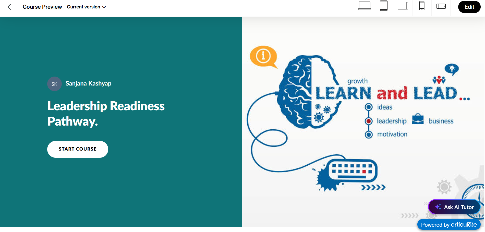
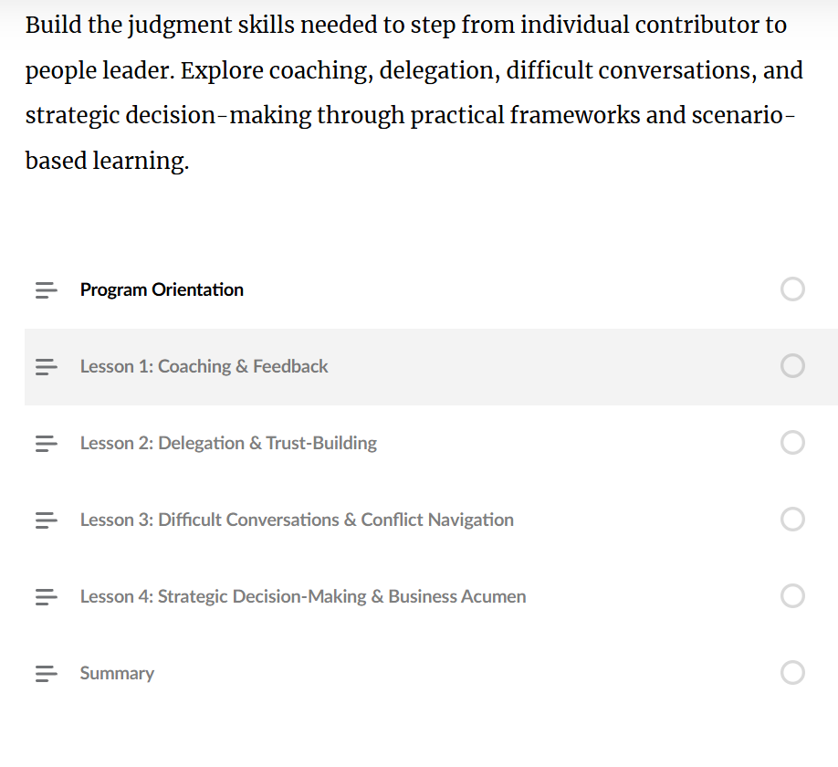
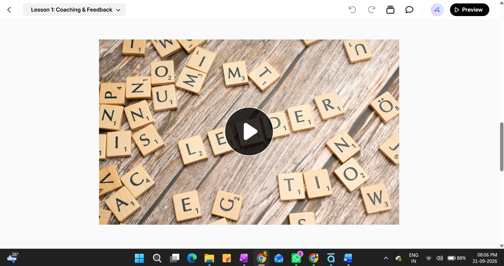
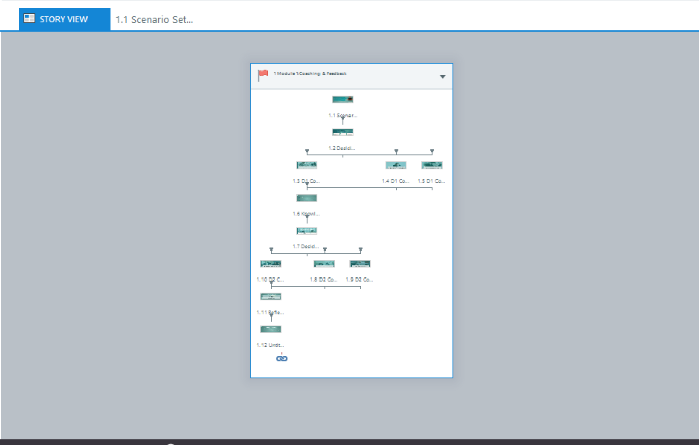
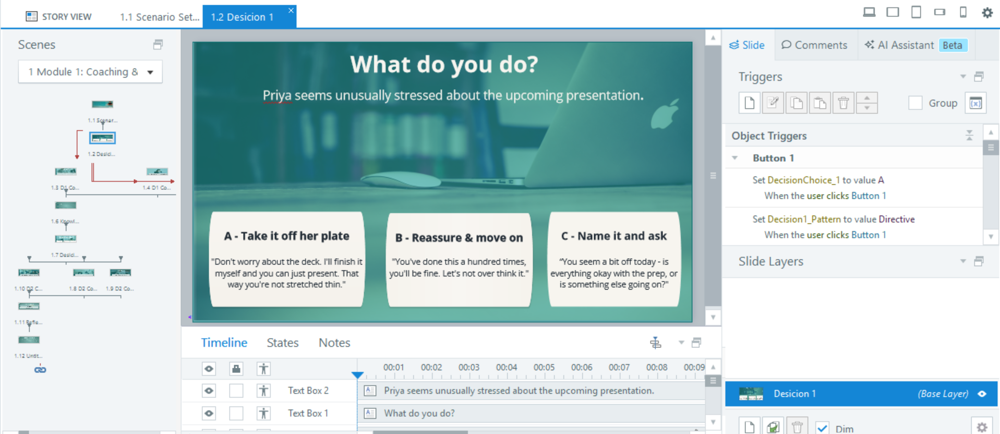
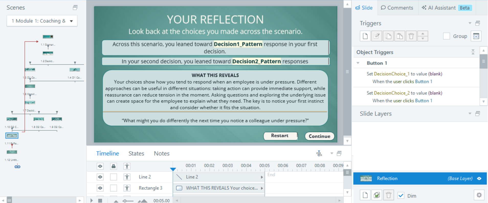

A scenario-based learning experience designed to build foundational judgment skills for high-performing individual contributors preparing to step into leadership.
Launch Leadership Readiness Pathway →Organizations often promote strong individual contributors into management without fully preparing them for the judgment required to lead people. The Leadership Readiness Pathway addresses that gap through realistic scenarios focused on coaching, delegation, conflict, and strategic decision-making.
By the end of the Leadership Readiness Pathway, promotion-track individual contributors will be able to evaluate realistic people-leadership scenarios spanning coaching, delegation, conflict, and resourcing trade-offs and select the response that reflects sound managerial judgment, avoiding the failure patterns modelled at each module's decision points.
The Leadership Readiness Pathway is a portfolio project focused on developing practical people-leadership judgment before learners formally step into management.
The four-module pathway is sequenced by increasing interpersonal and organizational complexity, moving from foundational coaching judgment toward strategic decision-making.
Recognize early indicators of performance-related stress and select a supportive coaching response.
Analyse / EvaluateDecide what to delegate, to whom, and how much oversight to retain.
AnalyseNavigate disagreement or a difficult message without avoiding the issue or escalating it.
EvaluateWeigh decisions across cost, timeline and stakeholder impact rather than focusing only on the immediate team.
Evaluate / CreateThe experience treats leadership as a judgment skill rather than a collection of facts to memorize.
Learners make decisions within realistic leadership situations rather than simply selecting answers to recall-based questions.
Choices lead to realistic consequences, allowing learners to see how different leadership responses can affect a situation.
The fully built module uses the learner's earlier decision path to inform what happens later in the scenario.
The experience closes with a variable-driven personalised summary rather than a simple pass/fail score.
The project demonstrates a progression from program-level curriculum architecture to scenario design and interactive development.
Defined the program goal, terminal objective and four-module learning architecture.
Mapped scenario decisions, cognitive demand and consequence paths.
Built the fully developed module using Rise 360 and Storyline 360.
Used personalised outcomes to support reflection and behavior change rather than certification.
A visual walkthrough of the learning experience, from the Rise 360 course structure through Storyline-based decision-making and personalised reflection.

The course entry point introduces the learner to the leadership readiness experience and establishes the scenario-based learning context.

The Rise 360 structure organizes the learning journey and gives learners a clear view of the experience.

An interactive Storyline experience is embedded directly within the Rise 360 course to support deeper scenario-based interaction.

The Story View demonstrates the underlying scenario structure, including the sequence of scenes and interactive decision points.

Learners are placed in a realistic leadership situation and must choose how they would respond rather than simply recall information.

The learner's earlier decision is carried forward using variables, allowing the reflection experience to respond to the learner's path.
Explore the working Leadership Readiness Pathway to experience the scenario-based learning approach.
Launch the Course →